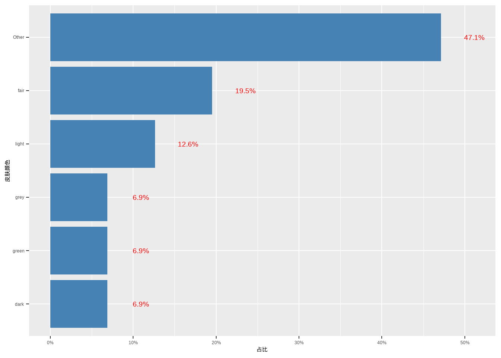
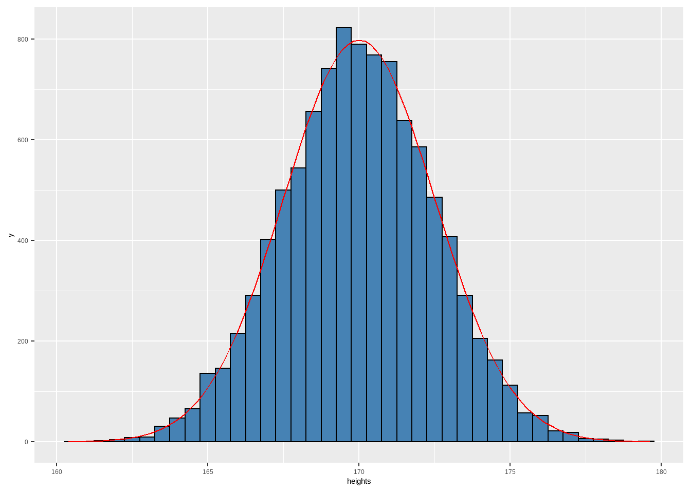
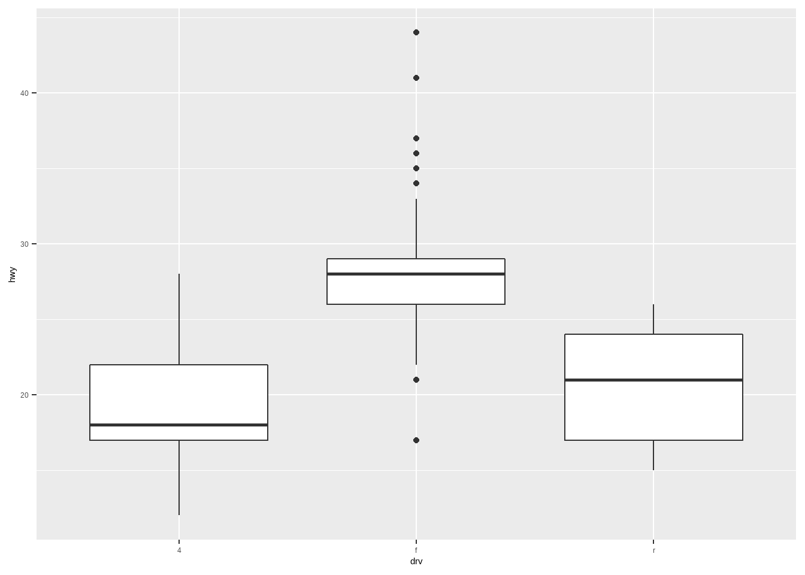

max(x) - min(x) # 计算数值向量x的极差
IQR(x) # 计算数值向量x的四分位距
var(x) # 计算数值向量x的样本方差
sd(x) # 计算数值向量x的样本标准差10 描述性统计
描述性统计，主要是通过计算汇总统计量、绘制统计图来描述数据。
10.1 一些概念
- 随机变量：一个事件的结果无法预料，这个现象就叫做随机现象。表示随机现象一组结果的变量就是随机变量。
如，调查了 100 个人的身高，这 100 个身高的数据是随机变量身高的 数据。并不是说这些身高值是不固定可变的，而是这100个身高值是一次调 查的结果，再调查100个人就是另一组不同的 100 个身高值。
- 概率分布：当多个随机结果放在一起时，可以发现一定的规律。随机现象五花八门，但每一种随机现象表现出来的规律性是固定的，用数学语 言表达出来就是概率分布。所以，不同概率分布就是不同随机现象规律性的数学描述。
Note
同一种概率分布，也不都是相同的，这是由不同参数值决定和区分的。
统计学最常用到四大概率分布：正态分布、 t 分布、卡方分布、 F 分布。
- 概率论与数理统计：概率论就是研究随机现象规律性，即各种概率分布及性质的理论。数理统计所研究的数据是带有随机性的，所以就需要借助概率论中的概率分布理论加以描述和做出统计推断， 所以说：
概率论是数理统计的基础，数理统计是概率论的一种应用。
Note
norm()系列函数：
dnorm(x, mean = 0, sd = 1, log = FALSE)：返回正态分布的概率密度函数值。pnorm(q, mean = 0, sd = 1, lower.tail = TRUE, log.p = FALSE)：返回正态分布的分布函数值。qnorm(p, mean = 0, sd = 1, lower.tail = TRUE, log.p = FALSE)：返回给定概率的p后的后的下分位点。rnorm(n, mean = 0, sd = 1)：返回n个正态分布随机数构成的向量。
10.2 总体、样本、参数和统计量
总体，是包含所研究的全部个体（数据）的集合。
样本，从总体中抽取的一部分个体的集合，样本中包含个体的数目成为样本量。
参数，用来描述总体特征的概括性值，是研究者想要了解的总体的某些特征值，如总体值（）、总体方差（）、总体比例（）等。
统计量，是用来描述样本特征的概括性数字度量，是根据样本数据计算出来的量，由于抽样是随机的，因此统计量是样本的函数。与上面总体参数对应的统计量是样本均值（）、样本标准差（）、样本比例（p）等。
由于总体数据通常量大且不确定，故参数通常为未知常数。所以才需进行抽样，根据样本计算出相应的统计量值对总体参数进行估计。
抽取样本的目的是根据样本数据提供的信息推断总体的特征（或用样本统计量推断总体参数）。
10.3 常用的样本统计量
- 中位数：位于数据最中间的数据，比中位数大和小的数据各占观测值的一半。中位数具有稳健性的优点，不受极个别极端数据的影响。
Note
正态分布的数据用均值描述，偏态分布的数据最好用中位数描述。例如，人均工资给人一种被平均的感觉，中位数工资才是更合适的中间收入。
分位数（quantile）：
- 中位数是 0.5 分位数，位于 0.5 位置的数。
- 0.25 分位数，称为下四分位数 (Q1), 是位于 0.25 那个位置的数，即比它小的数占比是 0.25, 比它大的数占比是 0.75。
- 0.75 分位数，称为上四分位数 (Q3)。
- 更一般地，一个有个样本的数据集，它的分位数，是位于位置的数，即比它小的数占比是 , 比它大的数占比是 。 或者说的数比它小， 的数比它大。
众数（mode）：是观测值中出现次数最多的数，对应了分布的最高峰。众数常用于分类数据，即出现频数最高的值。
rstatix::get_mode(x)：计算向量x的众数。
10.4 数据分散程度的统计量
极差（range）：数据中最大值和最小值的差。
四分位距（interquatile range）：上下四分位数之差。
样本方差：式中即为自由度，是计算样本统计量时能够自由取值的数值的个数。
Note
不同统计方法的自由度均不相同，但基本原则是每估计1个参数，就需要消耗一个自由度。
以回归分析为例，若有m个自变量，则需要估计个参数（包括截距项/常数项），所以模型的F检验用到的自由度是。这意味着，只剩下个可以自由取值的数值来估计模型误差。
样本标准差（sd）：样本的方差的平方根即为标准差s，量纲与原数据一致。
变异系数(coefficient of variation)：标准差占均值的百分比，可用于比较不同量纲数据的分散性。
R中的实现：
10.5 数据分布形状的统计量
- 偏度（skewness），刻画数据是否对称的指标，其中，均值对称的数据偏度为0（不偏）；右拖尾的数据偏度为正（右偏）；左拖尾的数据偏度为负（左偏）。
- 丰度（kurtosis）：刻画数据是否尖峰的指标
峰度是以标准正态分布为基准，标准正态分布的峰度为 0; 尖峰薄尾的分布峰度为正；平峰厚尾的分布峰度为负
datawizard包提供了skewness()和kurtosis()函数，分别计算偏度和丰度。
Note
很多包都提供了同时对多个变量（分组）描述汇总所有常见统计量的函数，其中tidy风格的是rstatix::get_summary_stats()和dlookr::describe()。
library(rstatix)
library(dlookr)
iris %>%
group_by(Species) %>%
get_summary_stats(type = "full")# A tibble: 12 × 14
Species variable n min max median q1 q3 iqr mad mean sd
<fct> <chr> <dbl> <dbl> <dbl> <dbl> <dbl> <dbl> <dbl> <dbl> <dbl> <dbl>
1 setosa Petal.L… 50 1 1.9 1.5 1.4 1.58 0.175 0.148 1.46 0.174
2 setosa Petal.W… 50 0.1 0.6 0.2 0.2 0.3 0.1 0 0.246 0.105
3 setosa Sepal.L… 50 4.3 5.8 5 4.8 5.2 0.4 0.297 5.01 0.352
4 setosa Sepal.W… 50 2.3 4.4 3.4 3.2 3.68 0.475 0.371 3.43 0.379
5 versic… Petal.L… 50 3 5.1 4.35 4 4.6 0.6 0.519 4.26 0.47
6 versic… Petal.W… 50 1 1.8 1.3 1.2 1.5 0.3 0.222 1.33 0.198
7 versic… Sepal.L… 50 4.9 7 5.9 5.6 6.3 0.7 0.519 5.94 0.516
8 versic… Sepal.W… 50 2 3.4 2.8 2.52 3 0.475 0.297 2.77 0.314
9 virgin… Petal.L… 50 4.5 6.9 5.55 5.1 5.88 0.775 0.667 5.55 0.552
10 virgin… Petal.W… 50 1.4 2.5 2 1.8 2.3 0.5 0.297 2.03 0.275
11 virgin… Sepal.L… 50 4.9 7.9 6.5 6.22 6.9 0.675 0.593 6.59 0.636
12 virgin… Sepal.W… 50 2.2 3.8 3 2.8 3.18 0.375 0.297 2.97 0.322
# … with 2 more variables: se <dbl>, ci <dbl>iris %>%
group_by(Species) %>%
dlookr::describe()# A tibble: 12 × 27
described_variables Species n na mean sd se_mean IQR skewness
<chr> <fct> <int> <int> <dbl> <dbl> <dbl> <dbl> <dbl>
1 Petal.Length setosa 50 0 1.46 0.174 0.0246 0.175 0.106
2 Petal.Length versicolor 50 0 4.26 0.470 0.0665 0.600 -0.607
3 Petal.Length virginica 50 0 5.55 0.552 0.0780 0.775 0.549
4 Petal.Width setosa 50 0 0.246 0.105 0.0149 0.1 1.25
5 Petal.Width versicolor 50 0 1.33 0.198 0.0280 0.3 -0.0312
6 Petal.Width virginica 50 0 2.03 0.275 0.0388 0.5 -0.129
7 Sepal.Length setosa 50 0 5.01 0.352 0.0498 0.400 0.120
8 Sepal.Length versicolor 50 0 5.94 0.516 0.0730 0.7 0.105
9 Sepal.Length virginica 50 0 6.59 0.636 0.0899 0.675 0.118
10 Sepal.Width setosa 50 0 3.43 0.379 0.0536 0.475 0.0412
11 Sepal.Width versicolor 50 0 2.77 0.314 0.0444 0.475 -0.363
12 Sepal.Width virginica 50 0 2.97 0.322 0.0456 0.375 0.366
# … with 18 more variables: kurtosis <dbl>, p00 <dbl>, p01 <dbl>, p05 <dbl>,
# p10 <dbl>, p20 <dbl>, p25 <dbl>, p30 <dbl>, p40 <dbl>, p50 <dbl>,
# p60 <dbl>, p70 <dbl>, p75 <dbl>, p80 <dbl>, p90 <dbl>, p95 <dbl>,
# p99 <dbl>, p100 <dbl>10.6 统计图
10.6.1 分类数据的统计图
- 条形图：
geom_bar()：对原始数据绘制geom_col()：对汇总频数/频率的数据绘制
library(tidyverse)
df <- starwars %>%
# 合并频数<=5的类别
mutate(skin_color = fct_lump(skin_color, n = 5)) %>%
count(skin_color, sort = TRUE) %>%
mutate(p = n/sum(n))
ggplot(df, aes(x = fct_reorder(skin_color, p),
y = p)) +
geom_col(fill = "steelblue") +
coord_flip() +
scale_y_continuous(labels = scales::percent) +
labs(x = "皮肤颜色", y = "占比") +
geom_text(aes(y = p + 0.04,
label = str_c(round(p*100, 1), "%")),
color = "red",
size = 5)
10.6.2 连续数据的统计图
10.6.2.1 直方图
连续数据利用直方图估计总体的概率密度。
- 直方图是用面积而不是高度来表示数据。将变量的取值范围分成若干区间，区间总面积为100%，每个矩形的面积为落在该区间内数据的频率：
Note
特别的，如果区间是等长的，则矩形的高是就是频率。
使用
geom_histogram()绘制直方图。频率直方图与概率密度曲线正好搭配，因为频率释放图的条形宽趋近于0，就是概率密度曲线。如果想绘制直方图 + 概率密度曲线，则需要对密度进行放大：倍。
set.seed(123)
df <- tibble(heights = rnorm(10000,
mean = 170,
sd = 2.5))
ggplot(df, aes(x = heights)) +
geom_histogram(fill = "steelblue",
color = "black",
binwidth = 0.5) +
stat_function(
fun = ~ dnorm(.x, mean = 170, sd = 2.5) * 0.5 * 10000,
color = "red"
)
Danger
如果想在同一张图上叠加多个直方图，一对比分类变量不同水平的概率分布，更适合使用
geom_freqploy()绘制频率多边形图。geom_density()绘制核密度估计曲线。
10.6.2.2 箱线图
以数据的上下四分位数为界画一个矩形盒子（数据中处于中间的50%的数据落在盒内）。
在数据的中位数位置画一条线段作为中位线。
默认延长线为盒长的1.5倍，之外的点为异常值。
箱线图的的主要应用为：剔除数据异常值、判断数据的偏态和重尾、可视化组间差异。
ggplot(mpg, aes(drv, hwy)) +
geom_boxplot()
10.7 列联表
对分类变量做描述统计，通常是计算各水平值出现的频数和占比，得到列联表（交叉表）。传统方法可以使用table()函数实现，而janitor包中提供了更加tidy的方法。
Note
列联表（contingency table）是观测数据按两个或更多属性（定性变量）分类时所列出的频数表。它是由两个以上的变量进行交叉分类的频数分布表。
列联表又称交互分类表，所谓交互分类，是指同时依据两个变量的值，将所研究的个案分类。交互分类的目的是将两变量分组，然后比较各组的分布状况，以寻找变量间的关系。
jantior::tabyl()函数可以生成一个、两个、三个变量的列联表，在结合adorn_*()系列函数，可以很方便的按照想要的格式添加行列合计、占比等。
library(janitor)
mpg %>%
tabyl(drv) %>%
adorn_totals("row") %>% # 添加合计行
adorn_pct_formatting() # 设置百分比格式 drv n percent
4 103 44.0%
f 106 45.3%
r 25 10.7%
Total 234 100.0%二维列联表，添加列占比和频数。
mpg %>%
tabyl(drv, cyl) %>%
adorn_percentages("col") %>% # 添加列占比
adorn_pct_formatting() %>% # 设置百分比格式
adorn_ns() # 添加频数 drv 4 5 6 8
4 28.4% (23) 0.0% (0) 40.5% (32) 68.6% (48)
f 71.6% (58) 100.0% (4) 54.4% (43) 1.4% (1)
r 0.0% (0) 0.0% (0) 5.1% (4) 30.0% (21)此外，还有很多包能将描述性统计回归模型的结果变成规范的表格样式，代表性的是gtsummary包；表格设计、实验设计在科研、生产中的应用非常广泛，各种常用的实验设计，可以使用DoE.base包实现。